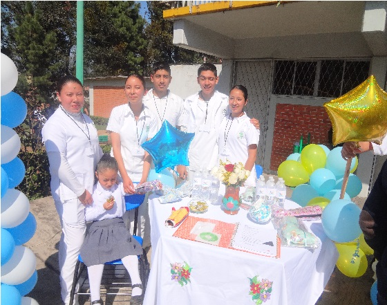
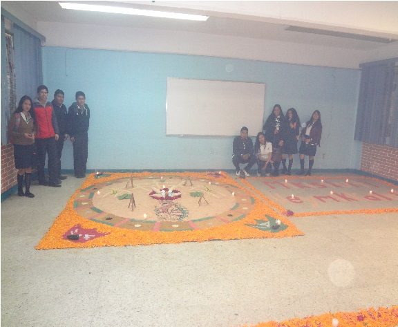

Colegio de Educacion Profesional Técnica del Estado de Puebla
Plantel Conalep 153 Teziutlán
Actividades Extracurriculares


En el CONALEP es muy importante dar a sus alumnos una educación integral formándolos para desempeñar una ocupación en el mundo del trabajo como profesionales técnicos y para su desarrollo en sociedad como ciudadanos responsables, críticos y participativos. Para contribuir al logro de este objetivo, de manera complementaria a las actividades académicas, se realizan actividades extracurriculares o extra clase para ayudarte a entender, valorar y enfrentar situaciones de la vida cotidiana en tu familia, en tu grupo de amigos y en la sociedad en general, así como para tu desarrollo personal a través de tus emociones, tu creatividad y tus capacidades físicas. Con esta finalidad, se considera básico trabajar cuatro tipos de actividades extracurriculares:
Orientación Educativa, Prácticas de Vida Saludable, Actividades Culturales y Deportivas en las que a través de talleres, conferencias, cine-debate, torneos, concursos y otras, se sensibiliza sobre la importancia del cuidado de la salud y se orienta sobre aspectos de interés general que los alumnos deben enfrentar en su vida cotidiana.Pide informes en el área de servicios escolares y participa en las actividades extracurriculares que se realizan en tu plantel.
Actividades Culturales
Las Actividades Deportivas y Culturales son un complemento a la formación académica que reciben los estudiantes, pues a través de ellas se fortalecen habilidades como el trabajo en equipo, la negociación, la comunicación y otras, así como la prevención de ciertas conductas de riesgo que pueden enfrentar los jóvenes.
A través de estas actividades se abre un espacio para tu expresión artística para acercarte a diversas manifestaciones culturales como son: la integración de grupos de danza, teatro, música, oratoria, entre otras, así como la realización de eventos cívicos, y fiestas tradicionales.
Actividades Deportivas
Las Actividades Deportivas y Culturales son un complemento a la formación académica que reciben los estudiantes, pues a través de ellas se fortalecen habilidades como el trabajo en equipo, la negociación, la comunicación y otras, así como la prevención de ciertas conductas de riesgo que pueden enfrentar los jóvenes.
La importancia de las actividades físicas y deportivas se ha reconocido como una actividad humana importante para el mejor desarrollo y mantenimiento de la calidad de vida, por esto en los planteles del Colegio se organizan encuentros y torneos de ajedrez, atletismo, fútbol, baloncesto, voleibol, entre otros.
Prácticas de Vida Saludable
Los hábitos de vida saludable son aquellos que te permiten un desarrollo físico, mental y emocional adecuado.El cuidado de tu salud es en un principio, tu responsabilidad, por lo que contar con información oportuna y confiable es muy importante para ayudarte a decidir de manera informada y responsable.En tu vida cotidiana constantemente enfrentas retos y debes tomar decisiones que pueden afectar tu salud y tu vida de manera importante.
Los derechos y deberes, la sexualidad, la alimentación, las relaciones sociales, las enfermedades, los hábitos de higiene y otros te plantean constantemente interrogantes a las que debes responder.Por esta razón en el CONALEP se propone a través de las actividades que fomentan las prácticas de vida saludable, ofrecerte información y orientarte sobre aspectos fundamentales para tu conformación armónica como persona en las siguientes áreas: salud e higiene, desarrollo personal, desarrollo social, prevención de adicciones y cuidado del medio ambiente; que se trabajan a través de actividades informativas como: conferencias, talleres de sensibilización y sociodramas; además de actividades recreativas como concursos y otras.